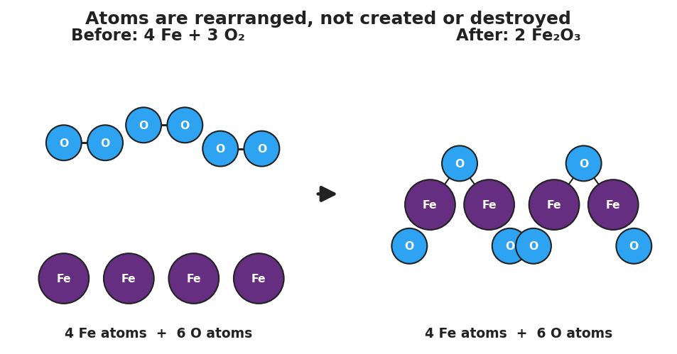

01 Phenomenon
A pad of fine steel wool sits on a balance and reads 1.40 g. Your teacher touches a 9-volt battery to it; the strands glow and “burn.” After it cools, the same steel wool is re-massed: 1.52 g. It got heavier. Burning a log leaves a pile of ash that weighs less than the log — but burning steel wool makes it more. Nothing was added by hand.

02 Driving question
If atoms are never created or destroyed, why does burning steel wool make it heavier?
03 Notice & wonder
| I notice… | I wonder… |
|---|---|
Turn & Talk #1: The iron atoms never left the balance pan. So the only way the solid could get heavier is if mass came from somewhere off the pan. In one sentence: where did the extra mass come from, and what is it made of?
04 Initial model
Before your teacher names the rule: here is the balanced equation for the steel-wool reaction. Use the rounded gram formula masses (Fe = 56, O = 16) to find the total mass of the reactants and the total mass of the products. Do they match?
4 Fe + 3 O₂ → 2 Fe₂O₃
Reactant side:
| Species | How many | Mass each (g/mol) | Mass contribution (g/mol) |
|---|---|---|---|
| Fe | 4 | 56 | |
| O₂ | 3 | 32 | |
| Total reactant mass |
Product side:
| Species | How many | Mass each (g/mol) | Mass contribution (g/mol) |
|---|---|---|---|
| Fe₂O₃ | 2 | 160 | |
| Total product mass |
Total reactant mass = _______ g/mol. Total product mass = _______ g/mol.
Do the two totals match? _______________
The solid on the balance went from 224 g of iron to 320 g of iron oxide. Where did the extra 96 g come from? _______________________________________________
05 Investigate
Part 1 — ABCs: Closed-bag reaction (predict before you test)
Inside a sealed zip bag, baking soda and vinegar react and the bag puffs up with gas.
Predict (write before mixing): Will the balance reading go up, down, or stay the same after they react? Give a reason.
Prediction: _______________ Reason: _______________________________________________
Observe and record:
| Stage | Balance reading (g) |
|---|---|
| Sealed bag, before reacting | |
| Sealed bag, after reacting (puffed up) | |
| Bag opened, gas released, re-massed |
While the bag stayed sealed, did the reading change? _______________
When you opened the bag, what happened to the reading, and what left the bag? _______________________________________________
Part 2 — Mass check for a second reaction
Confirm that the total mass of reactants equals the total mass of products for the closed-bag reaction. The gram formula masses are given.
NaHCO₃ + CH₃COOH → NaCH₃COO + H₂O + CO₂
| Side | Species | GFM (g/mol) | Mass contribution (g/mol) |
|---|---|---|---|
| Reactants | NaHCO₃ | 84.0 | |
| Reactants | CH₃COOH | 60.0 | |
| Reactant total | |||
| Products | NaCH₃COO | 82.0 | |
| Products | H₂O | 18.0 | |
| Products | CO₂ | 44.0 | |
| Product total |
Reactant total = _______ g/mol. Product total = _______ g/mol. Do they match? _______
In the open cup version, 44 g of CO₂ bubbled away per mole. Which way would an open-cup balance reading appear to change? _______________
Part 3 — Open or closed?
For each scenario, decide whether the system is open or closed, and whether the measured mass on a balance will appear to change.
| Scenario | Open or closed? | Will measured mass appear to change? |
|---|---|---|
| Steel wool burned on an open balance pan | ||
| Baking soda + vinegar in a sealed bag | ||
| Baking soda + vinegar in an open cup | ||
| A candle burning on a balance |
One question decides every row: can any atoms cross the boundary? Write that question’s answer beside each scenario above.
06 Make it make sense
For each reaction below, use the given gram formula masses to find the total mass of reactants and the total mass of products, and state whether mass is conserved. These are the same reactions you worked with in the Investigation — confirm your reasoning here.
1. Burning steel wool: 4 Fe + 3 O₂ → 2 Fe₂O₃ (Fe = 56, O = 16, O₂ = 32, Fe₂O₃ = 160)
| Side | Total mass (g/mol) |
|---|---|
| Reactants (4 Fe + 3 O₂) | |
| Products (2 Fe₂O₃) |
Is mass conserved? _______ How do you know? _______________________________________________
2. Closed-bag reaction: NaHCO₃ + CH₃COOH → NaCH₃COO + H₂O + CO₂ (84 + 60 → 82 + 18 + 44)
| Side | Total mass (g/mol) |
|---|---|
| Reactants | |
| Products |
Is mass conserved? _______ In the sealed bag, why did the balance reading stay the same? _______________________________________________
3. Open vs. closed: A student runs reaction #2 in an open cup and the balance reading drops by 44 g. Was conservation of mass violated? Explain.
07 Key vocabulary
- Law of Conservation of Mass
- the principle that matter is neither created nor destroyed in a chemical reaction; atoms are only rearranged, so the total mass of the reactants equals the total mass of the products
- closed system
- a region where no matter can cross the boundary; the total measured mass stays constant during a reaction (e.g., a sealed bag in which gas is produced but cannot escape)
- open system
- a region where matter *can* cross the boundary; the measured mass can appear to increase (matter enters, as oxygen does in burning steel wool) or decrease (matter leaves, as escaping gas does), even though matter overall is still conserved
Use each term in a sentence about today’s investigation. Do not copy the definition — describe something you actually did or observed.
Law of Conservation of Mass: _______________________________________________ _______________________________________________
closed system: _______________________________________________ _______________________________________________
open system: _______________________________________________ _______________________________________________
08 Revise your model
Return to your Initial Model (the steel-wool 320 g = 320 g mass-balance). Add labels:
Circle the 96 g of oxygen on the reactant side. Label it “mass that crossed the boundary from the air.”
Write a revised appositive sentence defining the rule you just learned:
The Law of Conservation of Mass — _______________________________________________ — means _______________________________________________
Then finish this Because / But / So sentence:
Burning steel wool gets heavier because __________________________________________, but __________________________________________, so __________________________________________.
09 Exit ticket
(a) A reaction is run inside a sealed flask resting on a balance. Before reacting, the flask and contents read 250.0 g. A gas is produced and the flask stays sealed. What does the balance read after the reaction? Explain in one sentence.
Reading: _______ g. Because: _______________________________________________
(b) For the reaction 2 H₂ + O₂ → 2 H₂O, use gram formula masses (H = 1, O = 16) to show the total mass of the reactants equals the total mass of the products.
| Side | Species | How many | Mass each (g/mol) | Mass contribution (g/mol) |
|---|---|---|---|---|
| Reactants | H₂ | 2 | ||
| Reactants | O₂ | 1 | ||
| Reactant total | ||||
| Products | H₂O | 2 | ||
| Product total |
(c) In one sentence, explain why a piece of magnesium ribbon burned in open air ends up heavier than the original ribbon, even though matter is conserved.
10 Explore further
- Burning steel wool mass-comparison lab: Mass a loosely teased ball of steel wool on a balance. Ignite it (9-volt battery touched across the strands is the safest classroom ignition; or a flame in a fume hood). Re-mass the cooled product. Students record before/after masses and compute the change. The mass *increases* (typically by a few tenths of a gram for a small sample) because iron combines with oxygen from the air: 4 Fe + 3 O₂ → 2 Fe₂O₃. Connect to the particle diagram in `figures/steel_wool_particle_conservation.png`.
- Closed-system reaction mass measurement: Run a reaction that produces gas (e.g., baking soda + vinegar, or an Alka-Seltzer tablet + water) inside a sealed zip bag or stoppered flask resting on the balance. Mass before reacting and after reacting: the reading does not change. Then open the bag and re-mass — now it drops, because CO₂ gas escaped. The contrast (sealed = constant, open = changes) is the controlled-variable proof that matter is conserved.
- Javalab "Conservation of Mass / Balancing" simulation: an optional digital tile-balancer where students drag atoms to confirm equal counts on both sides; reinforces that balancing *is* accounting for conserved atoms.